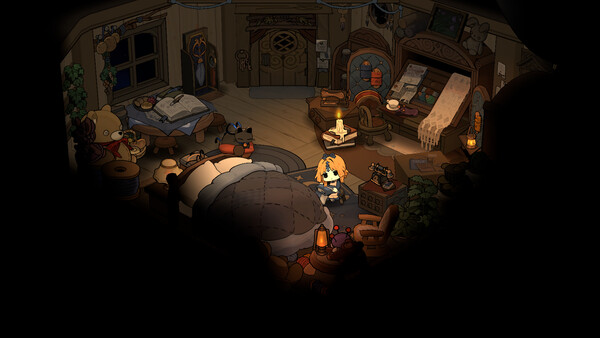
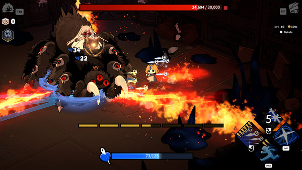
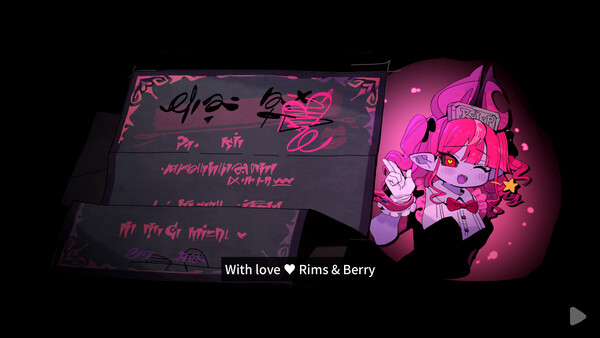

Primary sources
- Official Team Tapas Steam news — 1.0 launch notes and pre-launch examples.
- Official Garden of Witches Steam page — store facts, screenshots and media.
- Team Tapas map-generation explanation — authored rooms, randomized placement and rewards.
- Version 1.0 upgrade-reset investigation — current player reports and developer follow-up.
Evidence labels
- Official 1.0
- Confirmed in the Aug 28 full-release notes.
- Official preview
- Published by Team Tapas before launch; detailed values may have changed.
- Player-tested
- Requires a named version, loadout, chapter and repeatable comparison.
Media usage
Game screenshots, icons, animations and key art were downloaded from official Steam or Team Tapas announcements. They remain © Team Tapas, Ltd. Files are served locally; retrieval URLs and SHA-256 hashes are recorded in assets/media/source-manifest.json.



Correction format
Page URL: Claim to correct: Game version shown: Scissors / Spell / Imprint / Relic: Chapter and difficulty: Screenshot or uncut clip: